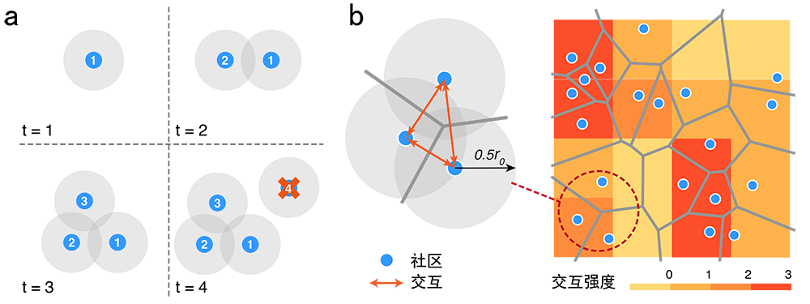

My research interests and topics.
Mapping Population Distribution with Mobile Phone Data
i. Home and Work
- Stay Points | Home-Work Location | Mobile Phone Data | Machine Learning

 * Population density of Beijing
* Population density of Beijing
- Paper in preparation
ii. Dynamic Distribution
- Dynamic Distribution | Rhythm | Urban Sensing

- Lei Dong, Sicong Chen, Yunsheng Cheng, Zhengwei Wu, Chao Li, and Haishan Wu. 2017. Measuring economic activity in China with mobile big data. EPJ Data Science. arXiv version: http://arxiv.org/abs/1607.04451
- Hongbin Pei, Bo Yang, Jiming Liu, and Lei Dong. 2017. Model-based group sparse Bayesian learning for actively monitoring dynamical systems. AAAI’18.
Urban Networks
i. Commuting Network
- Commuting Pattern | Spatial Partition | Metropolitan Area


Commuting networks of Beijing-Hebei-Tianjin (top) and Yangtze River Delta (Bottom).
- Paper in preparation
ii. Network Efficiency
- Road Network Efficiency | Day-Night Population | Google Maps
- Lei Dong, Ruiqi Li, Jiang Zhang, and Zengru Di. 2016. Population-weighted efficiency in transportation networks. Nature Scientific Reports. doi:10.1038/srep26377
iii. Migration
- Labor Force Migration | Spring Festival (Chunyun) | Population Flow

- Paper in preparation
Economic Activity and Mobile Big Data
i. MobiMetrics
- Employment | Consumption | Nowcasting
- Lei Dong, Sicong Chen, Yunsheng Cheng, Zhengwei Wu, Chao Li, and Haishan Wu. 2017. Measuring economic activity in China with mobile big data. EPJ Data Science. arXiv version: http://arxiv.org/abs/1607.04451
- Media hit: New Scientist, Bloomberg, Economist, Forbes, MIT Tech Review.
ii. Poverty and Development
- Mobile Internet | Poverty | Regional Development
- Lei Dong and Haishan Wu. 2017. Mobile Internet and regional development in China. Environment and Planning A, 49(4):725-727. doi:10.1177/0308518X16676091
- Meng Zeng, Rong Shi, Lei Dong, Haishan Wu. 2016. The Living Standards Dimension of the Human Development Index. UNDP Report. Link
Scaling Law in Urban System
i. Spatial Attraction Model
- Spatial Attraction | Active Population | Scaling Law

- Ruiqi Li, Lei Dong, Jiang Zhang, Xinran Wang, Wen-Xu Wang, Zengru Di, and H.E. Stanley. 2017. Simple spatial scaling rules behind complex cities. Nature Communications, 8(1841). doi:10.1038/s41467-017-01882-w.
- Ruiqi Li, Lei Dong, Xinran Wang, and Jiang Zhang. 2016. The geometric origins of complex cities. Proceedings of European Conference on Complex Systems (ECCS’14), Springer. doi:10.1007⁄978-3-319-29228-1_5
ii. City Boundary and Scaling Law
- City Boundary | Spatial Data | MAUP | Scaling Law
- Lei Dong, Hao Wang, and Hongrui Zhao. 2017. The definition of city boundary and scaling law. Acta Geographica Sinica (地理学报), 72(2):213-223. doi:10.11821/dlxb201702003
iii. Urban Cells
- Paper in preparation